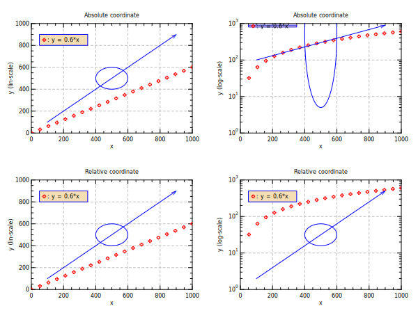

opt (gd:1 lc:blue st:cr2 sc:red ft:solid fc:wheat ts:0.8)
# in default absolute coordinate
@ expr = "y = 0.6*x"
set x = range(20,1,1000)
set [expr]
xlab "x"
div 2 2
for scale (lin log)
opt (ys:[scale])
title "Absolute coordinate"
ylab "y ([scale]-scale)"
box 0 1000 0 1000
plot x y (rp:1 lw:0)
fbox 50 350 800 900
symb 80 850
text 100 850 ": [expr]"
arc 500 500 100
line 100 900 100 900 (ae:1)
end
opt (rc:1) ; # from here relative coordinate
for scale (lin log)
opt (ys:[scale])
title "Relative coordinate"
ylab "y ([scale]-scale)"
box 0 1000 0 1000
plot x y (rp:1 lw:0)
fbox 0.05 0.35 0.8 0.9
symb 0.08 0.85
text 0.1 0.85 ": [expr]"
arc 0.5 0.5 0.1
line 0.1 0.9 0.1 0.9 (ae:1)
end
